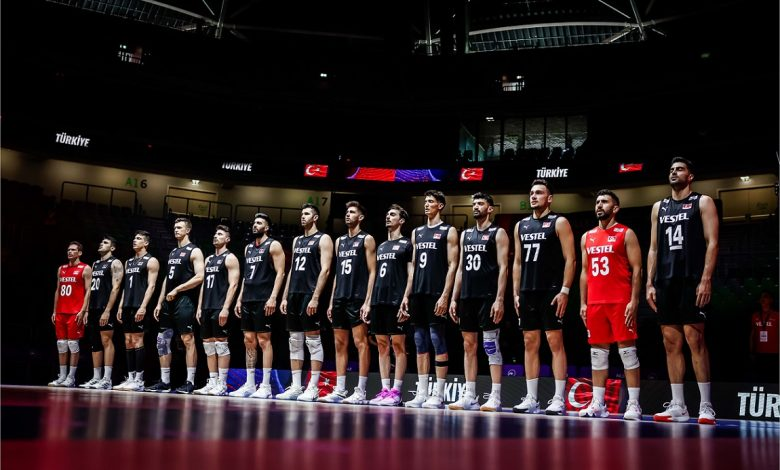

Voleybol Milletler Ligi (VNL)
Türkiye Erkek Milli Takımı, 2024 yılından itibaren Voleybol Milletler Ligi'ne katılmıştır. Tek galibiyetleri, İran erkek voleybol takımına karşı olmuştur ve maç 3-1 sonuçlanmıştır.

Türkiye Erkek Milli Voleybol Takımı, Türkiye Voleybol Federasyonu tarafından yönetilen ve Türkiye’yi uluslararası erkek voleybol karşılaşmalarında temsil eden bir takımdır. 27 Temmuz 2024 tarihi itibarıyla FIVB Dünya Sıralaması'nda 17. sırada bulunmaktadır.
Türkiye, voleybolda ilk uluslararası resmi turnuva olarak Erkek Milli Takımı ile, 1956’da, Paris’te yapılan Erkekler Dünya Voleybol Şampiyonası’na katılmıştır.
Türkiye, FIVB Altın Lig'e katılmış ve bu turnuvada başarılar elde etmiştir. 2018 yılında bronz madalya kazanmıştır. 2022 yılında gümüş madalya kazanmıştır. 2019,2021 ve 2023 yıllarında şampiyon olmuştur. Bu turnuvada en çok altın madalya kazanan ülkedir.
Türkiye Erkek Milli Takımı, 2024 yılından itibaren Voleybol Milletler Ligi'ne katılmıştır. Tek galibiyetleri, İran erkek voleybol takımına karşı olmuştur ve maç 3-1 sonuçlanmıştır.
Türkiye Erkek Milli Takımı, tarihinde ilk kez Olimpiyat elemeleri oynadı.